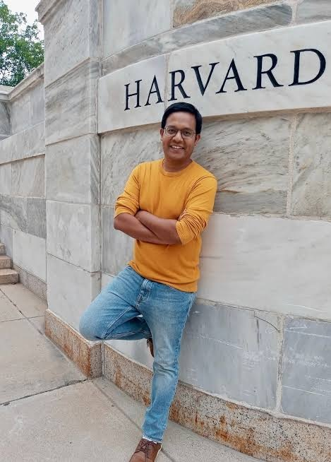

True excellence deserves celebration, not envy. Dedicated to documenting the resilience, intellect, and groundbreaking research of Dr. Rubul Mout—and standing firmly beside homegrown Assamese achievers.

I do not know Dr. Rubul Mout personally. We have never met, spoken, or collaborated. Yet, watching unnecessary negativity, skepticism, and backlash directed toward an Assamese scientist who rose from humble beginnings to work at some of the world's premier research institutions compelled me to build this platform.
As an entrepreneur working on the ground in Assam, I know how difficult it is to build something meaningful from scratch. When someone from our own soil breaks global barriers in protein engineering and cancer immunotherapy, their success belongs to every young student in Assam dreaming beyond limitations. Pull-down culture weakens a society; standing up for our achievers builds a stronger Assam.
Born in Kajoli-Chaki village in Kamrup district, Assam, Rubul Mout grew up in an agrarian household facing severe financial hardship. Studying under kerosene lamps and walking miles to school, his early life was defined by perseverance and an insatiable curiosity for science.
Overcoming economic obstacles through scholarships and sheer grit, he pursued his undergraduate studies in Chemistry in Assam before earning his Master's degree from the Indian Institute of Technology (IIT) Guwahati, laying a rigorous foundation in chemical biology and nanotechnology.
Moving to the United States, he earned his Ph.D. in Chemistry from the University of Massachusetts Amherst. There, he pioneered nanoparticle-mediated delivery systems capable of transporting CRISPR-Cas9 gene-editing machinery directly into living cells.
Joining the prestigious laboratory of Dr. George Daley at Harvard Medical School / Boston Children's Hospital, his work expanded into computational protein design, synthetic biology, and engineering immune cells to fight complex cancers.
Beyond peer-reviewed journals and patents, Dr. Mout authored the acclaimed Assamese memoir 'Mor Xopunor Xodagar' (মোৰ সপোনৰ সদাগৰ), inspiring thousands of students across Northeast India to pursue science and dream without fear.
Co-developed engineered nano-assemblies capable of delivering CRISPR-Cas9 ribonucleoproteins directly into cell nuclei with high efficiency, overcoming major barriers in therapeutic gene editing.
Designed novel synthetic proteins and molecular switches from scratch to control cellular signaling, receptor activation, and targeted biological responses.
Contributed to programmable immune cell engineering aimed at making CAR-T and stem-cell-derived therapies safer, modular, and more effective against solid tumors and blood cancers.
A widely read Assamese non-fiction work chronicling his journey from rural poverty to international laboratories, democratizing scientific ambition for vernacular-medium students.
Listen directly to Dr. Rubul Mout discussing synthetic biology, scientific curiosity, and his journey from Assam.
An accessible breakdown of how engineered proteins and immune cells are shaping the future of medicine.
Dr. Mout shares lessons on perseverance, overcoming language barriers, and building scientific temperament in Assam.
Add your voice to support Dr. Rubul Mout and encourage every researcher, innovator, and entrepreneur rising from Assam.